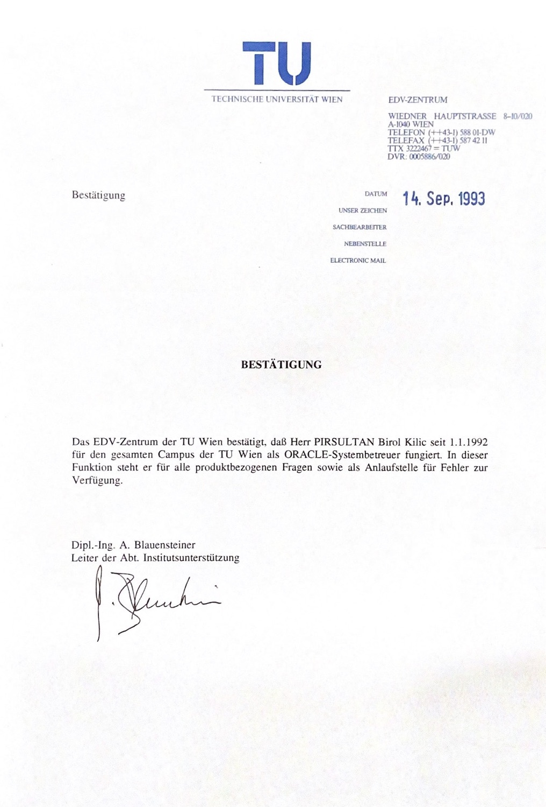

Über uns & Markenstrategie
Unternehmensprofil, technischer Hintergrund sowie kennzeichenrechtliche Dokumentation gemäß Aufgabe 3.
Unternehmensprofil & Gründer
PiroMed Office GesmbH ist ein österreichisches Softwareunternehmen mit Sitz in 1060 Wien (Webgasse 12/9). Gegründet von Dipl.-Ing. Birol Kılıç, entwickelt das Unternehmen standardisierte, hochsichere Software-Infrastruktur für Ordinationen, Ärztezentren und medizinische Dienstleister.
Technischer Hintergrund & Ausbildung
Nach Studienabschnitten ab 1986 an der ETH Zürich erfolgte der erfolgreiche Abschluss des Studiums der Elektrotechnik an der Technischen Universität Wien mit dem akademischen Grad Dipl.-Ing. Im Rahmen der offiziellen Sponsionsfeier hielt Dipl.-Ing. Birol Kılıç die Festansprache im Namen der Absolventinnen und Absolventen. Die datenbanktechnische Basis des Unternehmens gründet auf langjähriger Praxiserfahrung, unter anderem ab 1992 als zentraler ORACLE-Systembetreuer für das EDV-Zentrum der TU Wien.

Markendokumentation & Schutzformen (Aufgabe 3)
Gemäß den Vorgaben der Lehrveranstaltung wurden drei voneinander unabhängige, distinkte Markenformen definiert (da eine reine Wortmarke und eine Wort-Bildmarke als redundant gelten).
1. Wort-Bildmarke (Kombinierte Marke)
Bedeutung & Gestaltung: Das grafische Element (stilisiertes medizinisches Organisationskreuz auf limettengrünem Quadrat) kombiniert mit dem Firmennamen in klarer serifenloser Typografie. Es symbolisiert Präzision, Gesundheit und moderne IT-Infrastruktur.
2. Reine Bildmarke (Signet / Bildzeichen)
Bedeutung & Gestaltung: Die reine Bildmarke besteht ausschließlich aus dem stilisierten Organisations-Icon ohne jegliche Wortbestandteile. Sie dient als eigenständiges Wiedererkennungsmerkmal für Favicons, App-Icons und Benutzeroberflächen.
3. Farbmarke (Konturlose Farbmarke)
Bedeutung & Gestaltung: Geschützt wird der spezifische fluoreszierende Limettengrün-Farbton als Farbmarke für Software-Benutzeroberflächen im medizinisch-administrativen Bereich. Der Farbton hebt sich signifikant vom branchenüblichen Dunkelblau/Weiß ab und gewährleistet höchste Wiedererkennung und Barrierefreiheit (Kontrastverhältnis über 13:1 auf dunklem Grund).
Klassifikation nach dem Abkommen von Nizza
Die Marken von PiroMed Office werden für folgende Klassen des Nizza-Klassifikationssystems beansprucht:
| Nizza-Klasse | Waren- und Dienstleistungsverzeichnis |
|---|---|
| Klasse 9 | Herunterladbare und aufgezeichnete Software für die Terminverwaltung, Ordinationsorganisation und Büroautomation im Gesundheitswesen; Datenbankmanagement-Software. |
| Klasse 42 | Software as a Service (SaaS); Bereitstellung von nicht herunterladbarer Online-Software zur Praxisadministration; Cloud-Computing zur sicheren Datenorganisation für medizinische Einrichtungen. |
Markenrecherche & Kollisionsprüfung
Zur Vermeidung von Schutzrechtsverletzungen Dritter wurde eine systematische Recherche über die amtlichen Register (EUIPO eSearch, TMview sowie das Register des Österreichischen Patentamtes) durchgeführt. Für die gewählte Zeichenkombination „PiroMed Office“ sowie die grafische Ausgestaltung konnten in den Klassen 9 und 42 keine identischen oder verwechslungsfähigen prioritätsälteren Schutzrechte festgestellt werden.
Hinweis: Universitäres Prüfungsprojekt an der TU Wien (Lehrveranstaltung Daten- und Informatikrecht, WS 2026).